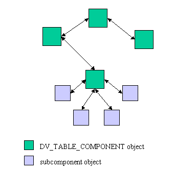
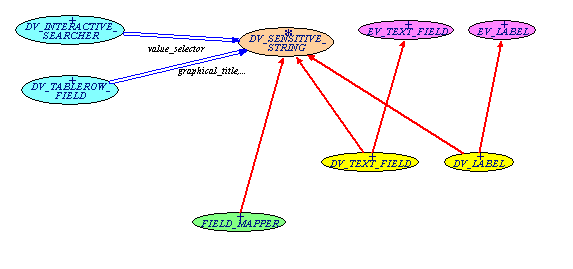
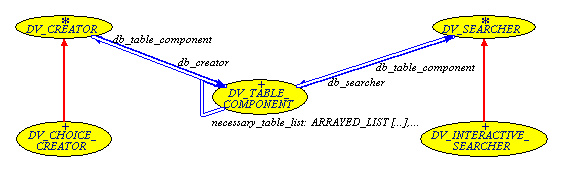
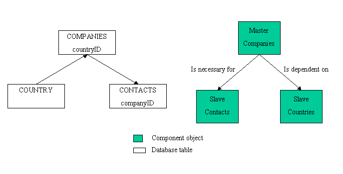
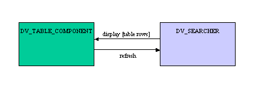
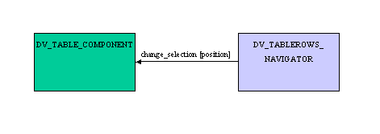
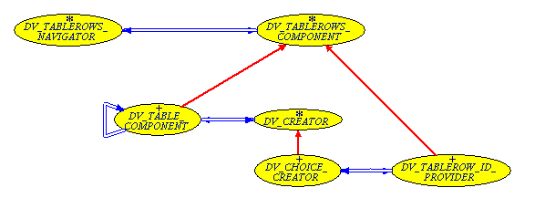
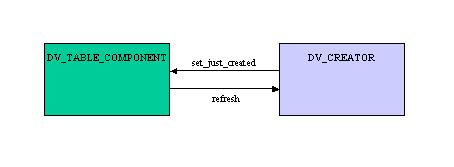
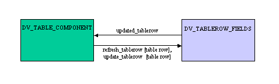

DataView cluster helps the programmer creating a GUI for a RDBMS. It gives a basic solution for a RDBMS GUI and also enables the developer to customize his GUI from this basic interface.
This cluster is client of EiffelStore to interface with a RDBMS and EiffelVision2 to create a GUI. However, the use of EiffelStore and EiffelVision2 is sufficiently encapsulated to let the programmer use other database/graphic libraries.
Notice finally that DataView is based on some common O-O design patterns. Knowing these patterns will help you understand how the library works. It can also give an example of patterns use.
Tip: To learn easily how to use the cluster, you can generate a basic GUI application based on this cluster with the EiffelStore Wizard.
This part draws the main capabilities that can be expected from the DataView cluster. These capabilities are not exhaustive since the cluster architecture enables to add easily new capabilities to it.
The cluster has been designed to work well with relational databases on Third Normal Form. Database tables must also have an unique numeric ID.
The cluster provides facilities to:
For instance, an interface can display a multi-column list of table rows. A given row can be selected in the list and its information can be then edited through a set of text fields and combo-boxes.
The standard cluster usage is to define a GUI that will associate a given frame/window to a given database table, that is, the information that is displayed in a GUI area will be determined at compile-time. This enables to adapt the GUI display to the type of information displayed, which is recommended when creating a GUI for non-developer users (or any people that should not be aware of the database structure and functioning). Nevertheless, determining the type of information displayed by a frame/window at runtime is still possible as not hard-coded. This possibility is used in the generated example of the EiffelStore Wizard using the DataView cluster.
Abstracting database in the GUI might not be as easy as only changing database attribute fields names. Information to display may not match the database tables structure. However, for consistency reasons, we can assume that the information to display within a GUI area belongs to a set of associated tables. The easiest solution is to create database views that directly contain the information to display on the GUI area. This implies though that the database has to be modified for the GUI needs.
DataView cluster affords a second solution:
The cluster provides facilities for the following actions:
Other capabilities can be added to these ones, for instance by writing descendants of DataView cluster classes that would handle more database operations.
Operations relative to the database structure modification, for instance creating a database table, may be more difficult to add since the database structure is hard-coded. But these advanced capabilities might not be necessary in a GUI for non-developer users.
The DataView cluster is based on 1 class called DV_TABLE_COMPONENT that represents the interface for 1 relational database table. An architecture using DataView is centered on database table structure rather than the GUI structure. The basic idea is to have:
This is then possible to adapt the code to have a GUI meeting the specifications, database structure can be totally abstracted in the interface, which might be more convenient for non-developer GUI users.
The cluster can be separated into 3 main parts:
The abstract database interface is defined in the EiffelStore generation.tables_access cluster. This cluster can indeed been used independently from the DataView cluster.
The model cluster processes the information retrieved from the GUI and the database and update then both GUI and database.
The cluster is based on the DV_TABLE_COMPONENT class which objects represents a database relational table (or view).
DV_TABLE_COMPONENT objects can be interconnected to match the table associations. The DV_TABLE_COMPONENT class has been designed to work with 3rd Normal Form relational databases. DV_TABLE_COMPONENT achieves most of the work to retrieve associated table rows for a 3NF database. For instance, when deleting a table row, the component ensures that every associated table row is also deleted.
DV_TABLE_COMPONENT objects can be customized by adding some subcomponents to it. Subcomponents enable to display table rows content on screen, to navigate among table rows and to perform different database queries.

Process objects structure for a GUI
This cluster adapts several well-known O-O design patterns.
The GUI appearance is totally abstracted in the GUI processing part, this enables to change the GUI display without changing any part of the model part. This is implemented with 2 sets of classes:
Let's see an example through a BON diagram:

Model-View separation pattern implementation in DataView
Light blue classes represents the model cluster.
Orange class represents the handle.
Yellow and green classes represents the view cluster.
Pink classes represents the EiffelVision2 library.
DataView cluster provides the developer with a basic GUI implementation AND lets them customize their application. This is possible with a strategy pattern:
The developer assigns different subcomponents to a DV_TABLE_COMPONENT object to define its behavior. The component object only uses the interface of each subcomponent.
A default implementation is written for each interface to let the user use the cluster as quick as possible. To adapt components behavior to their needs, the developer can then create a new subcomponent class inheriting from the abstract interface.
This BON diagram illustrates this for DV_CREATOR and DV_SEARCHER subcomponents:

Strategy pattern used in DataView model cluster
This part describes how to use the table component class and its subcomponents classes:
The DV_SEARCHER class to select table rows from the database.
The DV_TABLEROW_NAVIGATOR class to navigate among selected table rows.
The DV_CREATOR class to create new table rows in the database.
The DV_TABLEROW_FIELDS class to edit a table row content.
This class is responsible for the management of a database table. Its behavior is determined by its assigned subcomponents.
To create a valid and functional DV_TABLE_COMPONENT object, follow these steps:
The component can then be used on an interface:
Output handlers are specific to the DV_TABLE_COMPONENT object, that is, you can output messages in a different way within your GUI. However, the same handlers will be used for subcomponents.
3 handlers can be set:
These handlers have default values, which are:
This handler is specific to the application. It must inherit from ABSTRACT_DB_TABLE_MANAGER. Since it is specific to the program, it can be set before creating any DV_TABLE_COMPONENT object through {DV_DATABASE_HANDLER}.set_database_handler. The DB_TABLE_MANAGER class is the default database handler for EiffelStore.
No subcomponent is associated to 'write', 'refresh' and 'delete' actions since these actions does not require specific behavioral choices.
To perform 'write', 'refresh' and 'delete' at runtime, a controller is associated to each of these actions. This controller triggers the action when a determined user event is grabbed, for instance, when the user clicks a button.
Controllers are implemented by the abstract class DV_SENSITIVE_CONTROL of cluster user_interactions (handle).
Subcomponents can be assigned to a table component to specify its behavior to create table rows, select table rows from the database and navigate among selected table rows. A special subcomponent enable to display the current table row, i.e. the table row that can be edited to update the database. The default behavior for these subcomponents is that the functionality is not available, that is, subcomponents are not mandatory.
These components share the table component output handlers. They are automatically activated when table component is activated.
Table components can be associated to reflect relation of database tables represented. Associated table components are organized:
Note: Notice that table associations can be nested.
2 types of associations are possible to reflect table relations:
Let us see an example with 3 relational tables:

Tables architecture and corresponding component objects
The object architecture leads to a GUI where the user can select a company and see the company country information and contacts in this company.
Finally, notice that by default slave components have the same output handlers as their master and slave components are activated when the master component is.
DV_SEARCHER is responsible for retrieving table rows from the database. Let us see how it interacts with a table component:

Basic relationship between table component class and search class
DV_SEARCHER component does not afford an extended interface. This interface is defined in its descendants. The implemented DV_SEARCHER descendants are:
This class provides 3 types of searches:
Call read to set table rows on the associated table component.
Call read_from_tablerow to set table rows on the associated table component. Qualification ID is the ID of the table row in parameter. Table of row in parameter must be the table of rows to select.
This capability is used by DataView cluster in DV_CHOICE_CREATOR to select a just-created table row and display it on the table component.
Call read_from_tablerow to set table rows on the associated table component. Table of row in parameter may not be the table of rows to select.
To extract the qualifier, the search component needs additional information:
This capability is used in DV_TABLE_COMPONENT when a table row is selected to set associated table rows to slave components. Take a look at add_necessary_table and add_dependent_table.
This class enables to create a graphic interface to let user perform basic searches. These searches are qualified by one table attribute. This interface has 5 parts:
Text input fields correspond to handle class DV_SENSITIVE_STRING, typed input fields corresponds to handle class DV_SENSITIVE_INTEGER and Boolean input fields corresponds to handle class DV_SENSITIVE_CHECK.
Table component class contains a set of table rows. This class lets table component class know which of these rows is the current one.

Basic relationship between table component class and navigation class
DV_CHOICE_CREATOR also uses the class to enable to select associated table rows when creating a new table row (for instance, when creating a company, an existing country should be selected). Let us see how this is designed:

DV_TABLEROWS_NAVIGATOR clients
Note: DV_TABLEROWS_COMPONENT class merely carries a set of table rows and enables to select one table row.
DV_CONTROL_NAVIGATOR affords a way to navigate among searched table rows.
This class enables 2 navigation systems:
Tip: Notice that both systems can be used.
You can directly set controllers for "previous" and "next" actions. A 3rd controller, "edit list", enables to show or raise the display list.
Caution: Notice that DV_CONTROL_NAVIGATOR only manages this controller sensitivity.
You can assign a display list to the navigator with a DV_TABLEROW_LIST component.
This class enables to create database table rows.

Basic relationship between table component class and navigation class
DV_CREATOR class contains minimum information to interact with DV_TABLE_COMPONENT: when a table row is created, a creator component may display it on the table component. In this case, when the table component needs to refresh the table rows set, this refreshing action need to be managed by the creator component:
Much of the work, that is row creation, is totally abstracted in DV_CREATOR. DV_CHOICE_CREATOR implements DV_CREATOR and thus affords a creation procedure.
This class creates a new table row and sets its key values:
DV_TABLEROW_NAVIGATOR is used to select a foreign key value, let us see how this is implemented:
DV_CHOICE_CREATOR suppliers for foreign keys selection
DV_TABLEROW_ID_PROVIDER inherits from DV_TABLEROWS_COMPONENT to interface with DV_TABLEROWS_NAVIGATOR.
Relation between DV_CHOICE_CREATOR and DV_TABLEROW_ID_PROVIDER is basically:

DV_CHOICE_CREATOR/DV_TABLEROW_ID_PROVIDER basic interactions
Creation process and DV_CHOICE_CREATOR objects creation procedure can help you use this class.
Table row creation process is:
To create a DV_CHOICE_CREATOR, follow these steps:
This class enable to display and edit the current table row of a table component. Let us see first how it interacts with the table component:

DV_TABLE_COMPONENT/DV_TABLEROW_FIELDS basic interactions
refresh_tablerow refreshes display with a new table row
update_tablerow requests an updated table row for database update. Unchanged values are kept from a default table row
updated_tablerow is the last updated table row
The class contains a list of fields that represent editable table attributes. The design is simple:

Table row edition capability design
This class enables to edit a table row attribute value. The view is abstracted using the handle cluster DV_SENSITIVE_STRING class that represents the editable text value.
This class manages a field value but can also provide field name and type if graphic fields are provided. Notice that standard DV_TABLEROW_FIELD objects can be generated through the DV_FACTORY class, which is a component factory.
This cluster provides the model with an interface to input or output data on the GUI. This enables to remove any link to a graphic implementation in the model, following the Model-View separation design pattern. The cluster contains a set of interface classes to design this:
The DV_SENSITIVE_CONTROL class lets a model class trigger a specific action on a determined user event. Furthermore, the model class lets the user know when its state enables to trigger the action, by setting the controller sensitivity (i.e. if the controller is insensitive, the action cannot be triggered).
Note: sensitivity excepted, these controllers could have been implemented by Eiffel agents.
Note: sensitivity enables to let the user know before triggering an action if this is possible or not. The other possibility is to let the user know after trying to trigger the action that it was not possible (with a warning for instance): this is often less convenient.
The standard controllers are buttons or menu items: the specific action is triggered when button is clicked or menu item selected.
DV_SENSITIVE_CONTROL is inherited by DV_BUTTON that implements an EiffelVision2 button. Other implementations can be added, such as a menu item.
The DV_SENSITIVE_STRING class lets a model class input or output a text graphically. As for controllers, the model class lets the user know when a text value can be input by setting the widget sensitivity.
The standard graphical widgets to perform this are text fields, but several other widgets can be used:
Note: customized, specific widgets can be defined, you can for instance take a look at the DV_STRING_LIST class.
This class lets a model class input or output an INTEGER value graphically. As for controllers, the model class lets the user know when an integer value can be input by setting the widget sensitivity.
Different widgets can be used to implement this:
This class lets a model class input or output a BOOLEAN value graphically. As for controllers, the model class lets the user know when a Boolean value can be input by setting the widget sensitivity.
The standard widget to implement this is a check box.
The DV_TABLEROW_LIST class provides an interface to display a set of table rows so that the user can select a particular row.
DV_TABLEROW_MULTILIST implements DV_TABLEROW_LIST with an EiffelVision2 multi-column list.
Note: This class is used for the standard implementation of DV_TABLEROW_NAVIGATOR to navigate among table rows selected from the database.